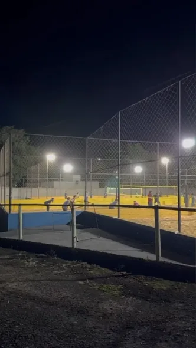
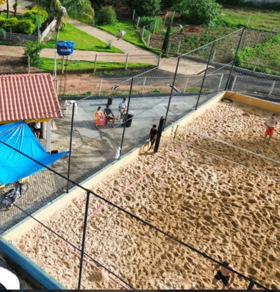
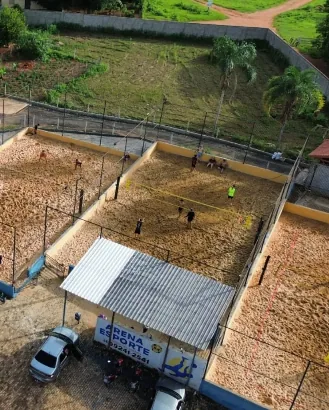
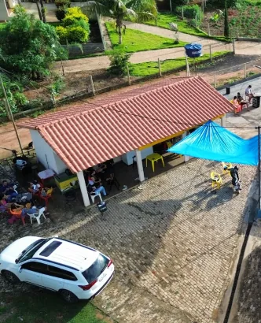
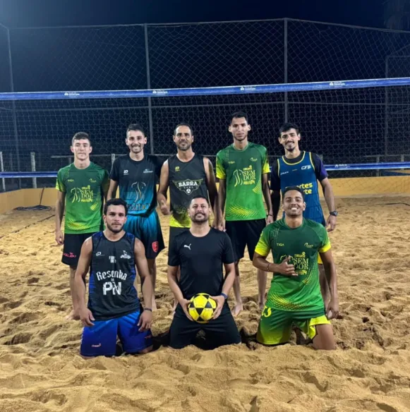
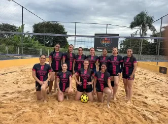

Futevôlei
Chama a dupla ou a turma de 4, escolhe a quadra e joga. Dá pra pegar até 2 horas seguidas na mesma reserva.
Reservar quadraFutevôlei e vôlei de areia · São Luís de Montes Belos
São 3 quadras na Chácara Bom Jesus, abaixo da Fosbel. Você vê o que está livre, escolhe a quadra e a gente confirma no WhatsApp.


Agenda ao vivo
Estes horários estão livres agora. Toque num deles e termine a reserva em menos de um minuto.
Carregando os horários da arena...


A arena
A Arena Esporte fica na Chácara Bom Jesus, logo abaixo da Fosbel, em São Luís de Montes Belos. São 3 quadras de areia cercadas por tela, com rede montada e refletores pra quem só consegue jogar depois do serviço.
Enquanto uma dupla joga, a outra espera na varanda coberta, com mesa, cadeira e a sombra da tenda. Quem vem de carro estaciona no pátio.
Modalidades
A Arena Esporte é arena de futevôlei, mas a quadra é sua pelo tempo que você reservou.
Chama a dupla ou a turma de 4, escolhe a quadra e joga. Dá pra pegar até 2 horas seguidas na mesma reserva.
Reservar quadraA reserva é igual: você escolhe "Vôlei de areia" na hora de marcar e a equipe já sabe o que vai rolar na quadra.
Reservar quadraSua turma joga toda semana no mesmo dia? Peça um horário fixo e a quadra fica guardada pra vocês, sem precisar marcar de novo.
Pedir horário fixoPrecisa das 3 quadras de uma vez, ou da tarde inteira? Combine pelo WhatsApp que a arena bloqueia a agenda pra você.
Combinar eventoA agenda mostra os próximos 30 dias e já avisa feriado e dia fechado.
Só aparece o que está livre de verdade. Horário ocupado nem dá pra clicar.
Sem cadastro e sem senha. Você recebe um link pra acompanhar a reserva.
A confirmação chega no WhatsApp. O pagamento é feito na arena.
Regras da agenda
Valem pra todo mundo. É o que deixa a agenda justa e evita a quadra parada com alguém esperando.
Jogou ou cancelou? Já pode marcar a próxima. Até 2 horas seguidas por reserva.
Pra jogar agora, chama no WhatsApp que a gente vê se tem quadra.
Pelo link que você recebe ao reservar. Depois disso, só pelo WhatsApp.
Com 2 faltas sem aviso, a reserva pelo site fica suspensa e só volta falando com a arena.
O site só segura o horário. Você acerta no dia do jogo.
Quem já jogou
Local com quadras de areia, boas quadras, bolas de qualidade, areia um pouco pesada, mas sem pedras.
[PREENCHER: depoimento real de um jogador, com autorização]
[PREENCHER: depoimento real de um jogador, com autorização]
Fotos
Tem mais no Instagram @arenaesportesaoluis, com os destaques dos jogos.


Dúvidas
Não achou a sua? Manda no WhatsApp.
Tirar dúvida no WhatsAppPelo site: escolha o dia, a hora e a quadra, coloque seu nome e WhatsApp e envie. O pedido já segura o horário e a arena confirma pelo WhatsApp. Não precisa de cadastro nem senha.
O valor aparece na hora de reservar. Se ainda não aparecer, a arena passa pelo WhatsApp.
O pagamento é feito na arena, no dia do jogo. Pelo site você só reserva.
Cada WhatsApp pode ter 1 reserva ativa por vez, de até 2 horas seguidas. Depois que você joga ou cancela, já pode marcar a próxima. Se a turma joga toda semana, peça um horário fixo pelo WhatsApp.
Abra o link da sua reserva e toque em cancelar, até 3 horas antes do jogo. Depois desse prazo, avise pelo WhatsApp. Lembrando: quem falta sem avisar 2 vezes perde a reserva pelo site.
Dá. As quadras têm refletores e os horários da noite aparecem na agenda.
Depende do feriado. A agenda do site já mostra os dias em que a arena fecha ou abre em horário diferente, então é só olhar a data antes de marcar.
Fica na Chácara Bom Jesus, abaixo da Fosbel, na R. Jabaquara. O último trecho é de estrada de terra: em época de chuva, venha com calma. O botão "Como chegar" abre a rota no seu celular.
Como chegar
Agenda aberta pros próximos 30 dias, com 3 quadras de areia na Chácara Bom Jesus. Você reserva agora e acerta na arena.